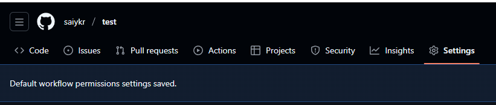
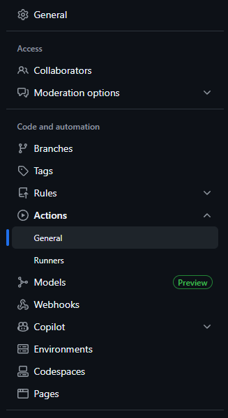
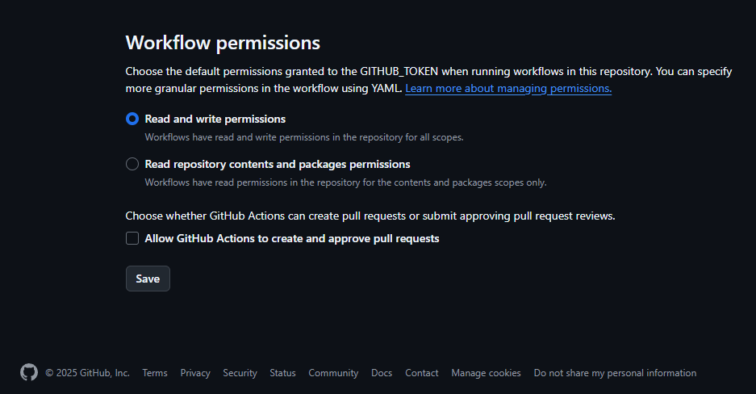

自动发布网页¶
在维护 MkDocs 文档站点时，如果每次更新都需要手动构建和发布，既繁琐又容易漏操作。借助 GitHub Actions，可以实现自动构建、自动发布到 GitHub Pages，让网页始终保持最新，无需人为干预。
本文将分步介绍如何在项目中配置自动发布流程，并提供模板和注意事项。
方案简介
核心思路
每次推送（push）到主分支（如 main）时，由 GitHub Actions 云端服务器自动拉取代码、构建文档、部署到 GitHub Pages 分支。极大简化手动流程，适合个人及团队协作。
步骤一：准备 GitHub 仓库
确保你的项目托管在 GitHub（建议是 Public 仓库或开通 GitHub Pages 接口权限）。
步骤二：配置自动发布工作流
-
创建工作流配置文件
在项目根目录下新建文件夹和文件：
mkdir -p .github/workflows nano .github/workflows/gh-pages.yml -
粘贴以下内容到
gh-pages.ymlname: Deploy MkDocs to GitHub Pages # 本次 GitHub Actions 工作流的名称 on: push: branches: - main # 只要向 main 分支 push 代码，就会自动触发这个工作流 jobs: deploy: # 整个流程名为 deploy（你也可以自定义） runs-on: ubuntu-latest # 在 GitHub 云端提供的最新 Ubuntu Linux 容器中执行 steps: # 下方为需要一步步执行的所有 task（步骤） - uses: actions/checkout@v4 # 步骤1：将你仓库的全部代码拉取到云端 runner 本地目录（没有这步，后续操作都找不到代码） - uses: actions/setup-python@v4 with: python-version: 3.11 # 步骤2：在runner里安装并启用Python 3.11 # 这能确保环境与本地兼容，后续 pip/mkdocs 可正常运行 - run: | pip install mkdocs mkdocs-material # 步骤3：在云端环境中用 pip 安装 MkDocs 及其主题插件（如 mkdocs-material） # 如有更多插件或依赖，可在此一并添加 pip install 命令 - run: mkdocs gh-deploy --force # 步骤4：执行 mkdocs gh-deploy --force 命令 # 自动构建 docs 并推送到 gh-pages 分支，完成 GitHub Pages 自动发布 # --force 参数为强制覆盖远端 gh-pages 分支
步骤三：赋予 Actions 写权限
- 打开你的仓库主页，点击 Settings

- 左侧选择 “Actions” → “General”

- 下拉找到Workflow permissions
- 勾选
Read and write permissions（默认只有读权限，必须切换为可写），保存设置

步骤四：推送并自动发布
- 正常开发，直接
git push到 main 分支即可 - 稍等片刻，GitHub Actions 会自动帮你构建和部署网页
- 可以在 GitHub 仓库的 “Actions” 页面实时查看构建和发布日志
- 发布后的网页，见仓库的“Pages”板块，通常是
https://<用户名>.github.io/<仓库名>/
常见问题与建议
- 分支名称不同：如主分支不是
main，请修改 workflow 对应分支参数 - 依赖插件：如有用到 mkdocs-material 以外插件，记得增加 pip install 命令
- 首推自动部署，减少人为误操作，方便团队协作和追踪
- 隐私安全：如为私有仓库或自定义 Token，可查阅 GitHub 官方文档调整安全策略
为什么推荐用 GitHub Actions 自动构建，而不是直接在本地构建上传？
1. GitHub Actions/CI/CD的目标：所有部署都在云端，发布过程和开发者的本地环境彻底解耦
- 只要有人push，无论谁push，无需每个人本地都能部署/写脚本/有密钥/定时开机。
- 本地构建上传一旦忘记，人为失误就会导致网页内容不同步。
2. 本地自动 build&deploy 有这些问题
- 依赖每个人本地环境（操作系统、pip包、git配置、deploy token等等，也许你本地 OK，同事就卡住了）
- 本地行为不可追踪：是否 build 了？有没有报错？出了问题 CI 没有任何提示、负责人很难排查
- 容易发生手动、漏操作、定时脚本崩溃等不可预期情况
3. 为什么必须在云端 Actions runner 里自动执行
- 统一、可追踪：无论是谁 push，工作流操作定型，所有日志都在 Actions 页面可查
- 安全托管，不泄露本地敏感信息，不会把发布密钥/Token暴露在个人电脑里
- 保证项目可移植/可维护/易交接，不用交接脚本/密钥/本地配置
总结
通过上述设置，不需要手动打包发布文档——只需更新、提交、推送，所有部署自动完成！